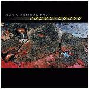

| Artist: | Various Artists |
| Title: | Sonic Residue From Vapourspace |
| Label: | Magna Carta MAX-9057-2 |
| Length(s): | 66 minutes |
| Year(s) of release: | 2001 |
| Month of review: | [05/2002] |
| 1) | Attention Deficit - Girl From Enchilada | 4.25 |
| 2) | Niacin - Blue Mondo | 6.35 |
| 3) | Steve Morse - Led On | 6.21 |
| 4) | Explorers Club - Time Enough | 5.46 |
| 5) | Liquid Tension Experiment - Osmosis | 4.19 |
| 6) | Bozzio Levin Stevens - Dark Corners | 10.30 |
| 7) | Bozzio Levin Stevens - Melt | 3.40 |
| 8) | Liquid Tension Experiment - Another Dimension | 7.21 |
| 9) | Steve Walsh - Kansas | 7.25 |
| 10) | Tempest - Jenny Nettles | 9.07 |